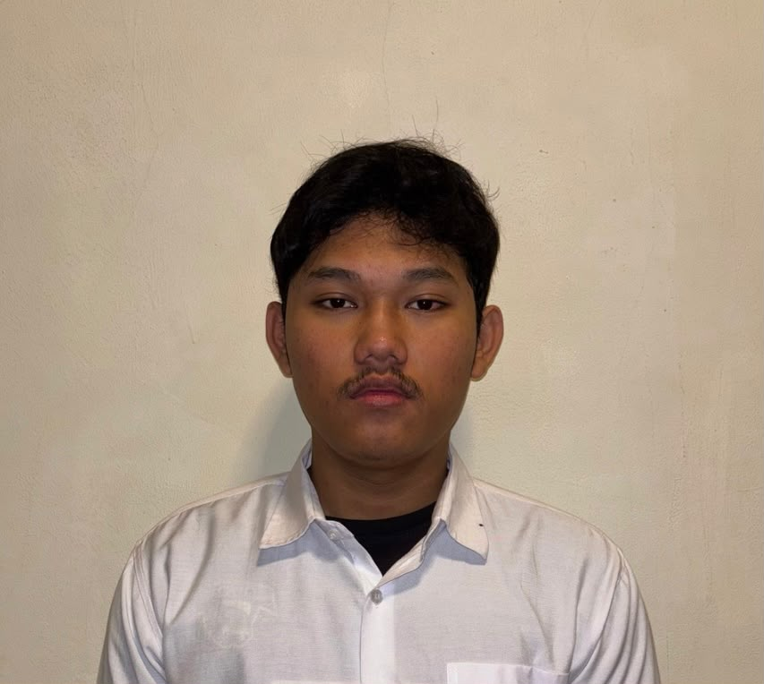

Profil Mahasiswa
Biodata
- NIM
- 2025081034
- Nama
- Junbae Dwi Putra
- Universitas
- Universitas Pembagunan Jaya.
- Tanggal Lahir
- 11 Juni 2007
- Tempat Lahir
- Jakarta
Pendidikan
- 2025 - :Sekarang S1 Sistem Informasi, Universitas Pembangunan Jaya
- 2022 - 2025: SMA Kartika X-1 Jakarta
- 2019 - 2022: SMP Negeri 178 Jakarta
- 2013 - 2019: SD Negeri 08
Pengalaman
- 2023: menjadi panitia acara
- 2025: mengikuti pelatihan atau seminar
Keahlian
- Microsoft Word dan PowerPoint
- HTML dan CSS dasar
- Desain dengan Canva
Publikasi
Belum ada publikasi ilmiah.